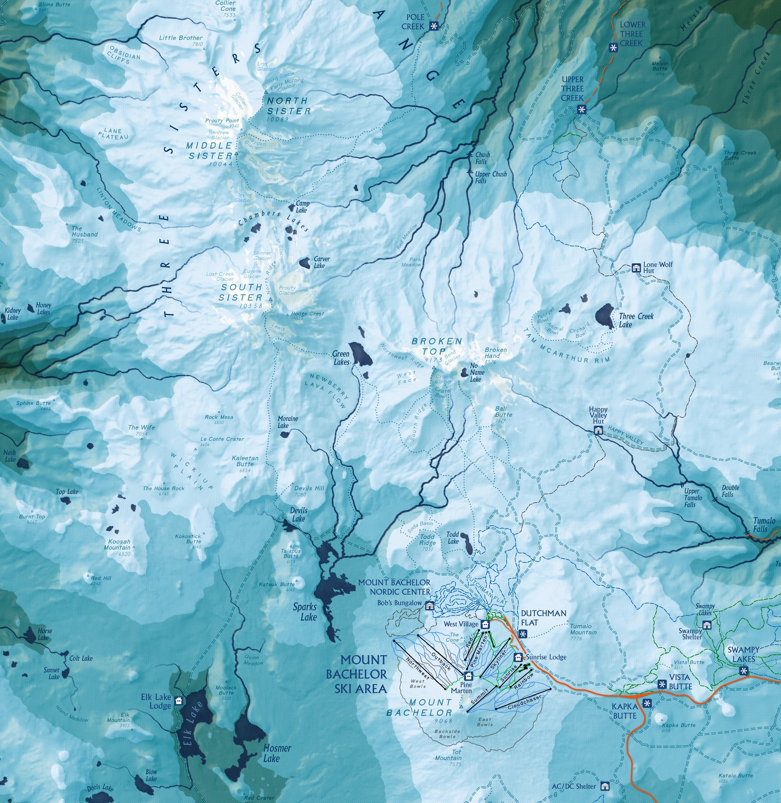
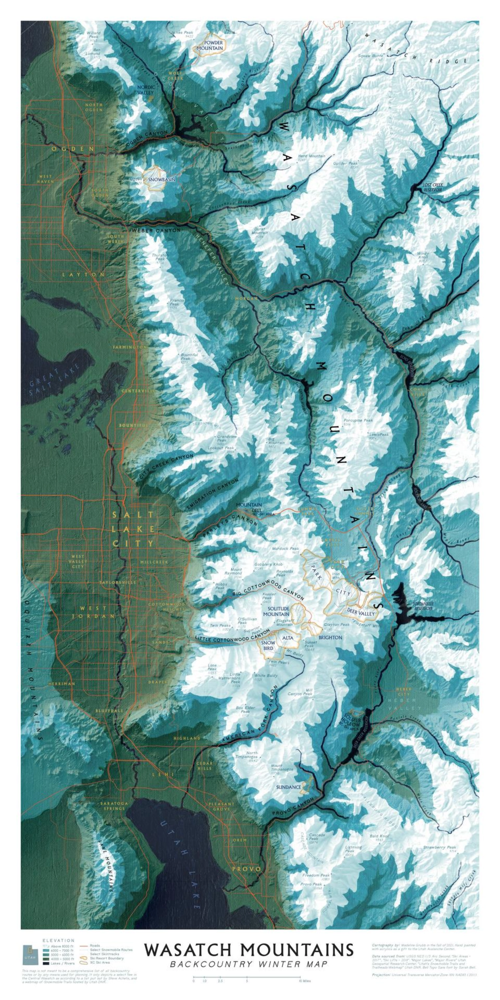

Maps for Ski Resorts, Heli-Ski Zones, Backcountry Routes, and Mountain Operations
Start Your Custom Map TodayMy approach to ski and snow mapping is shaped by an education background in snow dynamics and avalanche science, three summers of fieldwork on ice in Grand Teton National Park, 7+ years of backcountry experience, and 20+ years of ski experience.
I design functional ski and mountain maps that work as backcountry navigation guides, trail maps, mountain overviews, and navigation tools: built for clarity, safety, and real-world skier use.



More updates to come soon as I continue to work on ski maps for guidebooks, ski resorts, backcountry recreation and safety…